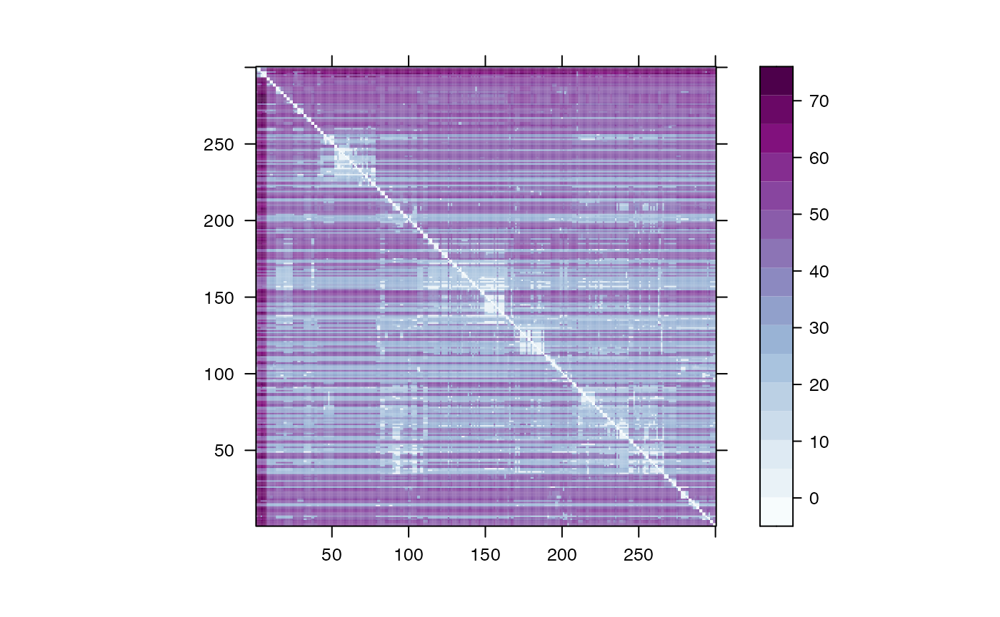
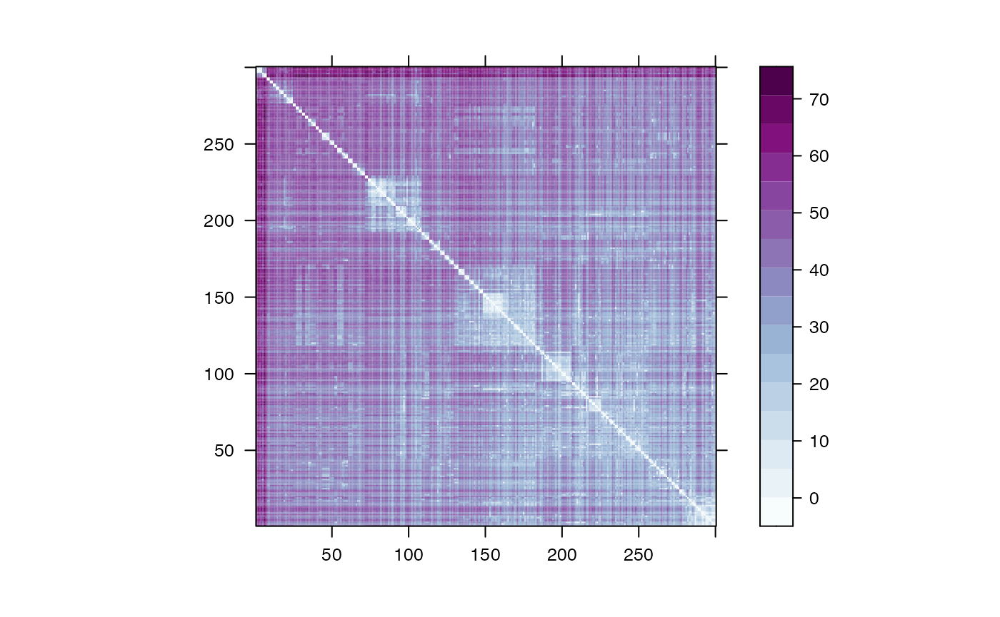

Decoding a Single Variant
Louis Aslett & Ryan Christ
2022-12-21
Source:vignettes/Decoding_a_Single_Variant.Rmd
Decoding_a_Single_Variant.RmdIn order to demonstrate how to use to calculate and plot a local distance matrix \(d^{\ell}\), the package comes with an toy dataset of 300 simulated haplotypes, , stored as a \(L = 400\) by \(N = 300\) .
require(kalis)
#> Loading required package: kalis
#>
#> Running in 64-bit mode using x86-64 architecture.
#> Loops unrolled to depth 4.
#> Currently using AVX2, AVX, SSE4.1, SSE2, FMA and BMI2 CPU instruction set extensions.
data("SmallHaps")maintains a special cache for loading a haplotype dataset (see next section for details). Since is designed for much larger datasets than this toy example that we would often never want load into , haplotypes can be imported directly into the cache using . can only cache and operate on one haplotype dataset at a time. Currently, requires that the haplotypes be stored in our custom HDF5 format but support for other common formats will be added shortly. In the following section we provide simple instructions for converting common file formats like VCFs and HAP/SAMPLE/LEGEND generated by SHAPEIT2 to our HDF5 format. However, if the haplotypes are loaded into a , we can easily import them straight into the cache using .
CacheHaplotypes(SmallHaps)From we can inspect the haplotype cache to ensure that the data has loaded correctly using . With the haplotypes loaded, next we must specify our model parameters. First we supply a recombination map, \(m\), where \(m^\ell\) is the distance between variant \(\ell\) and \(\ell + 1\) in Morgans. Here we randomly generate a recombination map and set the remaining parameters to their default values.
m <- rbeta(400-1,1,10)*1e-6
pars <- Parameters(CalcRho(cM = m, s = 1, gamma = 1), mu = 1e-8)Next we must initialize a forward table object with our parameters that will start at variant \(0\) and a backward table object that will start at the variant \(L+1\). We then use the function to propagate the forward table using parameters to target variant \(250\). We do the same with the backward table using the function. Note that and do not return anything, the tables and are updated in place.
fwd <- MakeForwardTable(pars)
bck <- MakeBackwardTable(pars)
Forward(fwd, pars, 250)
Backward(bck, pars, 250)Now that and are at the same variant, they can be combined to obtain the posterior marginal copying probabilities, \(p^\ell\), or a matrix of distances based on the negative log of those copying probabilities, \(d^\ell\), as follows.
The distance matrix can be easily clustered and visualized just by calling
plot(d)
#> Warning in levelplot.formula(form, data, aspect = aspect, xlim = xlim, ylim =
#> ylim, : device support for raster images unknown, ignoring 'raster=TRUE'
In some applications, one might want to symmetrize the matrix before plotting as follows.
d <- 0.5*(d + t(d))
plot(d)
#> Warning in levelplot.formula(form, data, aspect = aspect, xlim = xlim, ylim =
#> ylim, : device support for raster images unknown, ignoring 'raster=TRUE'